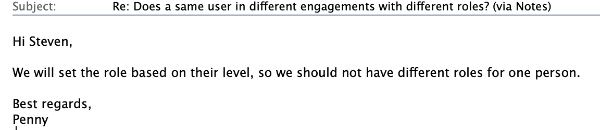

Engagement entity add to database
User story
In PFIC system, PwC internal user could visit all their business information without restriction at beginning.
Business information
PFIC system has fund, company information. Fund will invest multiple companies. So the business information will includes information for funds and companies.
But client want to introduce engagement concept to restrict PwC internal user to handle engagement’s business information.
Engagement
PwC internal user could be in one or more engagements; One engagement will have multiple funds; One funds will invest multiple companies.
Question about privilege in different engagement
One user could be in one or more engagements, but does a same user in different engagements with different roles?

DB design
Database as below:
- User
-
create table `users`( `id` varchar(128) NOT NULL, `email` VARCHAR(128) NOT NULL, `role` VARCHAR(128) NOT NULL, `engagementid` TEXT NULL, PRIMARY KEY (`id`), CONSTRAINT `email` UNIQUE (`email`) ) - Engagement
-
create table `engagements`( `id` varchar(128) NOT NULL, `name` VARCHAR(128) NOT NULL, `funds` TEXT NOT NULL, PRIMARY KEY (id) ) - Fund-company
-
CREATE TABLE fund_company_investments ( id varchar(128) NOT NULL, fund_id varchar(255) NOT NULL, company_id varchar(128) NOT NULL, year INT NOT NULL, PRIMARY KEY (id) ); - Fund
-
create table `fund` ( `id` varchar(128) NOT NULL, `name` VARCHAR(128) NOT NULL, PRIMARY KEY (id) ) - Company
-
create table `company` ( `id` varchar(128) NOT NULL, `name` VARCHAR(128) NOT NULL, PRIMARY KEY (id) )
Question
How could we check the user’s privilege on company and fund?
case class EngagementInfo(id: String, name: String, funds: Seq[String])
case class UserEngagementInfo(userRole: String, engagements: Seq[EngagementInfo],funds: Seq[String])
override def verifyForFund(email: String, fundId: String): Future[Boolean] = {
getUserEngagementInfoByEmail(email).map {
userEngagement =>
userEngagement.userRole match {
case "Admin" => true
case other if userEngagement.funds.contains(fundId) => true
case _ => false
}
}
}
override def verifyForComapany(email: String, companyId: String, year: Int): Future[Boolean] = {
getUserEngagementInfoByEmail(email).flatMap {
userEngagement=>
userEngagement.userRole match{
case "Admin" => Future(true)
case other =>
val fdIds= fiCompanyInvestmentsDAO.queryByCompanyIdAndYear(companyId,year).map{
investSeq=>investSeq.map(_.fiId).toSet
}
val fdIdsInEng = getUserEngagementInfoByEmail(email).map{
engs=>engs.funds.toSet
}
val comsetF= for(s1 <- fdIds;
s2 <- fdIdsInEng)
yield {
s1 &s2
}
comsetF.map{
comset=> !comset.isEmpty
}
}
}
}Question Two
1. If one user has different privilege in different engagement, how to design the database?
2. What will happen when user binding to engagement table not engagement binging to user table?
The source code for this page can be found here.